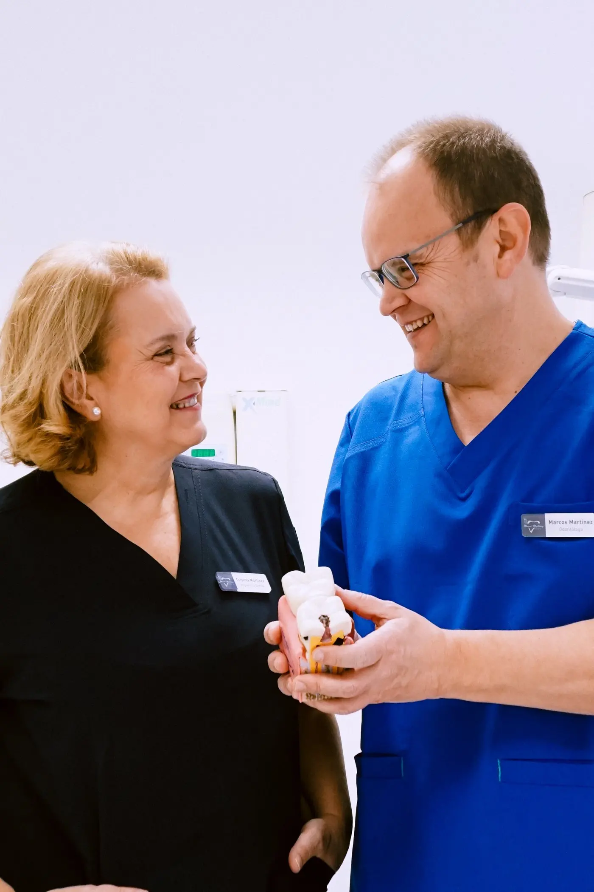

Aunque ambos tratamientos pueden mejorar una sonrisa, resuelven problemas distintos. La primera pregunta es si quieres cambiar el color del diente natural, su forma o ambas cosas.
¿Qué cambia un blanqueamiento dental?
El blanqueamiento busca aclarar el color de los dientes naturales mediante productos indicados y supervisados por un dentista. No modifica la forma ni la posición de los dientes. Tampoco aclara empastes, coronas o carillas existentes; por eso es importante revisar las restauraciones visibles antes de empezar. Algunas manchas pueden responder peor que otras.
¿Qué pueden cambiar las carillas?
Las carillas cubren la cara visible de uno o varios dientes. Según el caso, permiten modificar forma, tamaño aparente, color o pequeñas irregularidades. Pueden ser de composite o de cerámica. La elección depende del estado de los dientes, la mordida, la higiene, los hábitos y el resultado buscado. Algunas requieren retirar parte del esmalte, una decisión que debe explicarse antes de tratar.
Cómo orientar la elección según tu objetivo
Si los dientes están sanos y la principal preocupación es un tono amarillento, puede estudiarse primero el blanqueamiento. Si hay cambios de forma, bordes desgastados, espacios o manchas que no responden bien al blanqueamiento, las carillas pueden ser una opción. En ocasiones se combinan tratamientos, planificando el color antes de colocar nuevas restauraciones para que el resultado sea coherente.
Lo que conviene revisar antes de cualquier tratamiento estético
Primero hay que valorar caries, encías, sensibilidad, empastes y mordida. Si hay un problema de salud dental, se trata o estabiliza antes de centrarse en la estética. También conviene hablar de mantenimiento: tanto los dientes naturales como las carillas necesitan higiene y revisiones. Las carillas pueden dañarse o requerir reparaciones con el tiempo.
Preguntas útiles para la consulta
Pregunta qué cambio es realista para tus dientes, si será necesario tocar esmalte, cómo se verán los empastes o coronas que ya tienes, cuánto mantenimiento necesitarás y qué alternativas existen. Llevar una foto de tu sonrisa y explicar qué te gustaría mejorar ayuda a plantear un objetivo concreto.
En Marcos Martínez Clínica Dental valoramos opciones de estética dental en Opañel con cita previa. La recomendación se ajusta a tu salud bucal y a lo que quieres cambiar, sin prometer un resultado idéntico para todos.
¿Quieres que valoremos tu caso?
Estamos en Opañel, cerca de Metro Oporto. La atención es con cita previa: llámanos antes de acudir a consulta.
Llamar al 915 60 81 09 Escribir por WhatsApp